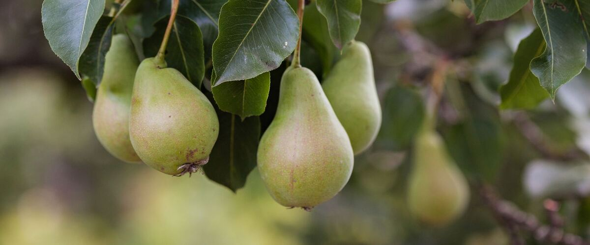

When to plant pear trees in Baker City, OR
Plant pear trees in Baker City Apr 20 – Jun 15.
- Difficulty
- Easy
- Sun
- Full sun
- Spacing
- 12 to 15 feet apart for dwarf trees, 18 to 20 feet for standard
- Planting depth
- Graft union 2 to 3 inches above the soil
- Frost
- Hardy perennial; comes back every year
- First harvest
- First pears in three to five years
Why these dates
Baker City's typical last spring frost is May 25. As a hardy perennial, this crop doesn't need to wait for that date. In the high desert and mountains, though, the soil usually isn't ready to work until about April 20.
High desert and mountains. Central and high eastern Oregon. Frost is possible almost any month. Use row covers, wall-o-water or cloches for warm crops, and choose short-season varieties.
How to grow pear trees in Baker City
- Pick a sunny spot with soil that drains well, and mix in an inch or two of compost.
- Plant pear trees Apr 20 – Jun 15, 12 to 15 feet apart for dwarf trees, 18 to 20 feet for standard. Graft union 2 to 3 inches above the soil.
- Water deeply through the first two summers. Pears need little pruning; take out crossing branches in late winter and keep the center open.
- Harvest: Pick European pears when they're full size and lift off easily but are still hard, then ripen them at room temperature. Asian pears ripen on the tree; pick when sweet and crisp.
Key numbers
- 3–5Years to fruit
- Plant two varietiesPollination
- Mature but still hardPick European pears
- Pear scab, fire blightBiggest risk
Growing notes
What makes the difference in Northwest gardens, in plain language.
Choosing varieties that pollinate each other
Pears are some of the most forgiving fruit trees for west-side gardens: they tolerate heavy, damp soil better than most fruit trees and need little spraying. Most European pears need a second variety that blooms at the same time. Bartlett, Comice and Seckel can pollinate each other, though Bartlett and Seckel are a poor match. Asian pears like Shinseiki bloom early, but they often overlap enough with early European pears to help with pollination as well.
Choose a rootstock suited to your space. Dwarfing pear rootstocks still make fairly large trees, so leave room as guide spacing suggests.
Why European pears ripen off the tree
A European pear left on the tree ripens from the inside out and turns gritty or mushy at the core. Pick them when they reach full size and the stem snaps off with a gentle lift, while the flesh is still firm. Bartlett ripens at room temperature in about a week. Comice and Anjou-type pears ripen better after a few weeks in the refrigerator, then a few days on the counter. Check ripeness by pressing gently near the stem: when it gives, it's ready.
Pests and diseases in the Northwest
Pear scab works like apple scab and spreads from fallen leaves in wet springs, so rake leaves each fall. Fire blight is a bacterial disease that thrives in warm, humid weather during bloom; it's more common east of the Cascades. Prune out blackened shoots in dry weather, cutting 8 to 12 inches below the damage and wiping your shears with disinfectant between cuts.
West of the Cascades, pear trellis rust causes bright orange spots on leaves. It spends part of its life on junipers, so it's worse near juniper hedges, and it's mostly cosmetic.
Common questions
When is the last frost in Baker City, OR?
Typically May 25. In 9 years out of 10, frost is over by June 16. These are 1991–2020 NOAA climate normals for Baker City Municipal Airport.
Is it too late to plant pear trees in Baker City?
The spring planting window runs through June 15. Potted plants can still go in later if you water them faithfully through their first summer.
How long until I can pick pear trees?
First pears in three to five years. Pick European pears when they're full size and lift off easily but are still hard, then ripen them at room temperature. Asian pears ripen on the tree; pick when sweet and crisp.
Why are my pears gritty or brown in the middle?
They were left on the tree too long. European pears should be picked while still hard and ripened indoors. Pick when the fruit reaches full size and lifts off the branch easily.
Do I need two pear trees?
For most European pears, yes. Plant two varieties that bloom at the same time, such as Bartlett and Comice. A neighbor's pear tree nearby can also do the job.
How long can you store homegrown pears?
Bartlett keeps for a few weeks in the refrigerator, while Comice and other winter pears can keep for a couple of months. Bring them out a few days before you want to eat them so they can soften.
Also plant in Baker City around the same time
Planting dates for pear trees in nearby areas
- Pendleton, OR Mar 20 – May 15
- The Dalles, OR Mar 20 – May 15
- Hood River, OR Mar 20 – May 15
- Hermiston, OR Mar 20 – May 15
- Ontario, OR Mar 20 – May 15
- La Grande, OR Apr 1 – May 27
Full planting calendar for Baker City · Pear trees in every city